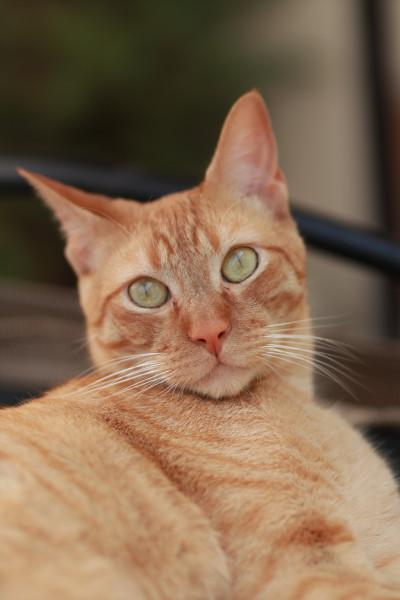

Testando todos os meus conhecimentos de programação
Colocar símbolos, tipo esses: ↑ € $ e etc.
Pulando uma linha de parágrafo →
tipo assim.
Colocar emojis:
😊
Imagens logo abaixo.
Aqui é mais para testar meus conhecimentos de texto ensinados pelo Guanabara.
Neste texto eu deixarei algumas coisas em Itálico, outras coisas eu colocarei em negrito e depois eu posso ir colocando outras configurações aleatórias só pra testar e aqui eu só to enchendo de ladainha pra poder encher de configuração, então não se preocupa em ler com atenção porque não tem nada demais escrito aqui.
Aqui está um código aleatório do javascript:
windows.document.write('Eu sou muito lindo, sabia?')
var a = document.querySelector('p.teste')
Daora também é citar o meu querido professor Gustavo Guanabara, esse lindo que falou essa frase:
dê uma pausa, vai fazer uma caminhadaRelaxa papai guanabara, vou fazer isso amanhã indo na academia!!! 🐈